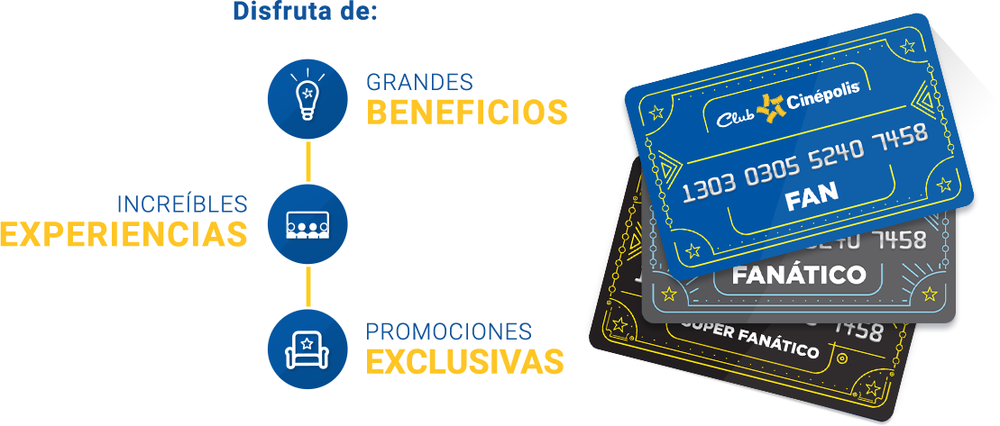
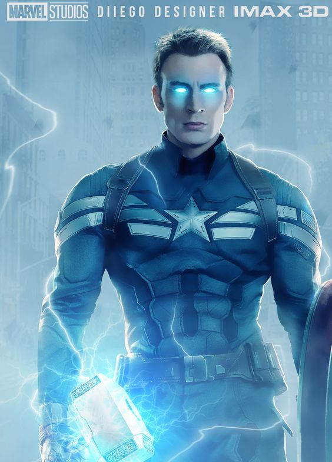
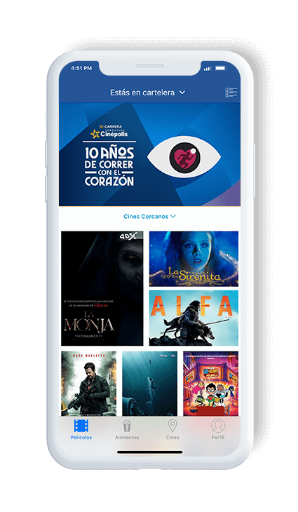

Cinepolis
Consulta la cartelera, horarios, estrenos, preventas y promociones que tenemos para ti.
Cinépolis es una empresa mexicana dedicada a la exhibición de películas fundada en 1971 en Morelia, Michoacán, bajo el nombre de Organización Ramírez.
En nuestro país acudir al cine suele ser todavía una forma de entretenimiento importante, incluso con la extensa oferta de servicios de streaming que existen para ver contenidos en la comodidad de tu casa.
Una de las mayores cadenas de exhibición de películas en el país es Cinépolis, compañía que nació en Morelia, pero ahora cuenta con salas en todo México y 12 países más: Estados Unidos, Guatemala, Honduras, Salvador, Costa Rica, Panamá, Colombia, Perú, Chile, Argentina, Brasil, España e India.

Avengers: Endgame
Los Vengadores restantes deben encontrar una manera de recuperar a sus aliados para un enfrentamiento épico con Thanos, el malvado que diezmó el planeta y el universo.
La decimación causada por Thanos ha ocasionado que la mitad de la vida en el universo se desintegre y muera. Clint Barton que se encontraba bajo arresto domiciliario por violar los acuerdos de Sokovia, es testigo de la desaparición de su familia por ese hecho. Tres semanas después, Carol Danvers rescata a Nebula y a Tony Stark, quienes están varados en el espacio exterior en la nave Milano de Quill, después de su batalla contra Thanos en el planeta Títan, y los lleva al complejo de los Vengadores, donde los esperan Natasha Romanoff, Bruce Banner, Steven Rogers, Rocket, Thor, Pepper Potts y James Rhodes. Mientras Tony Stark se recupera, el resto de los Vengadores localizan por medio de Nebula a un Thanos herido en un planeta al que esta llama El Jardín y deciden ir en su búsqueda, cuando estos llegan rapidamente lo enfrentan y dominan con facilidad, luego intentan recuperar las gemas con el objetivo de revertir los efectos del chasquido, cortándole la mano en la que tiene el Guantelete del Infinito. Pero Thanos les revela que ya es muy tarde, debido a que este a destruido las Gemas del Infinito para evitar que fueran usadas nuevamente y que hacer eso casi lo llevo al borde de la muerte, sin embargo Thor en pleno acto de furia, asesina a Thanos, decapitándolo con la Stormbreaker...

Historia
En 1971, con la apertura del «Cine Morelia» (hoy Cinépolis Morelia Centro) el cual se ubica en lo que hoy es la calle Santiago Tapia del centro histórico de la ciudad de Morelia, Enrique Ramírez Miguel funda la compañía Organización Ramírez...
Asistencia
En 2016, Cinépolis presentó una asistencia de 317 millones de personas, de los cuales 214,6 millones de asistentes se encuentran únicamente dentro del mercado mexicano y los 102,4 millones restantes en los demás países donde la compañía tiene presencia.


Fundación: 1971 (como Multicinemas), 1994 (como Cinépolis)

Productos: Club Cinépolis
